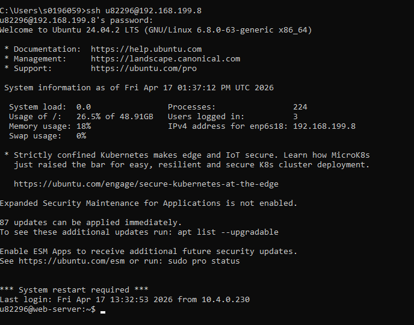
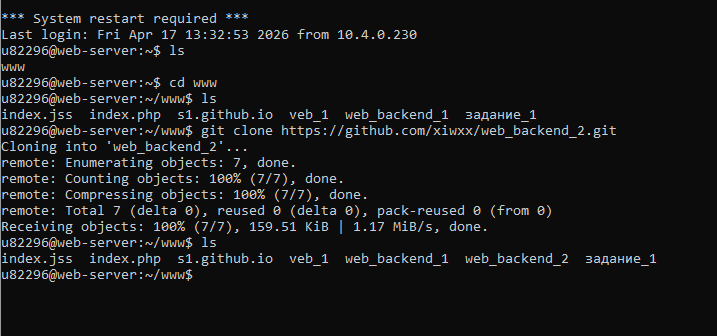
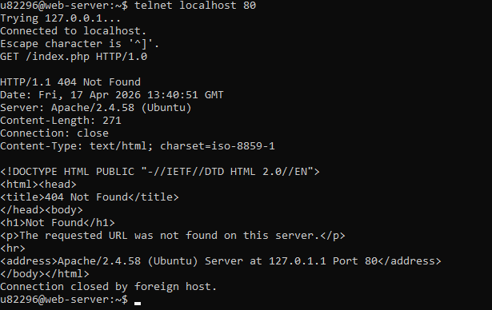
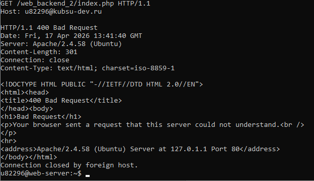
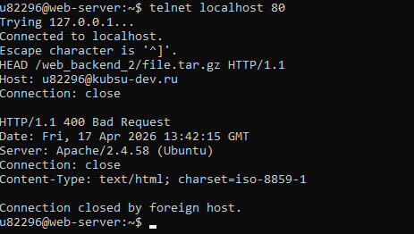
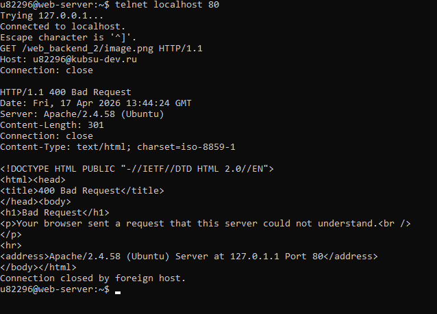
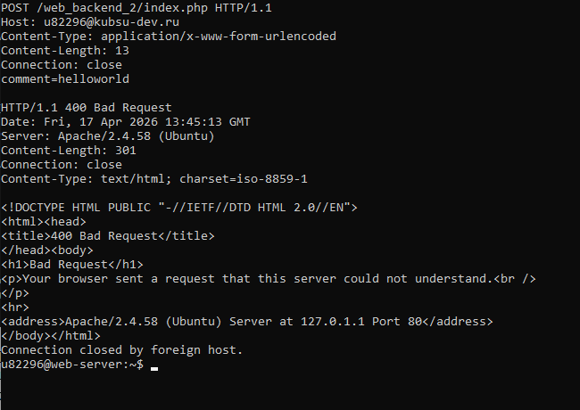
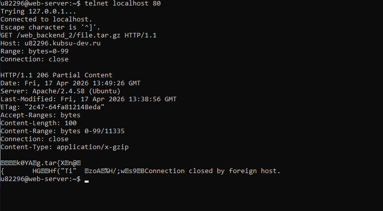
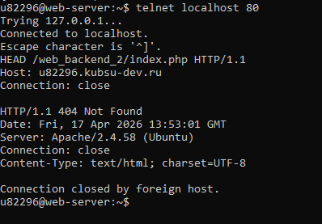

Лаб. №2 Аппаратно-программные средства Web, Базалеева Карина 22/2
Подключимся к удаленному серверу с помощью команды ssh

Скопируем файлы, предварительно загруженные на удаленный git-репозиторий, с помощью команды git clone

С помощью утилиты telnet localhost 80 подключаемся к серверу localhost с помощью telnet соединения
Войдя в режим ввода команд telnet, вводим команду GET /index.php HTTP/1.0

Далее скопируем и вставим команду с набором заголовков для получения содержимого файла index.php
GET /web_backend_2/index.php HTTP/1.1
Host: u82813@kubsu-dev.ru

HEAD /web_backend_2/file.tar.gz HTTP/1.1
Host: u82813@kubsu-dev.ru
Connection: close
HEAD-запрос запрашивает метаданные ресурса (заголовки) без передачи тела ответа

GET /web_backend_2/image.png HTTP/1.1
Host: u82813@kubsu-dev.ru
Connection: close
В поле Content-Type можно узнать медиатип запрашиваемого ресурса

Далее обратимся к index.php с помощью запроса POST со следующими заголовками:
POST /web_backend_2/index.php HTTP/1.1
Host: u82813@kubsu-dev.ru
Content-Type: application/x-www-form-urlencoded
Content-Length: 13
Connection: close
comment=helloworld

GET /web_backend_2/file.tar.gz HTTP/1.1
Host: u82813@kubsu-dev.ru
Range: bytes=0-99
Connection: close
В результате выполнения данной команды будет выведена часть содержимого запрашиваемого файла file.tar.gz

Аналогично, узнаем кодировку запрашиваемого ресурса из поля Content-Type

Далее инициализируем удаленный репозиторий и отправляем сверстанный сайт